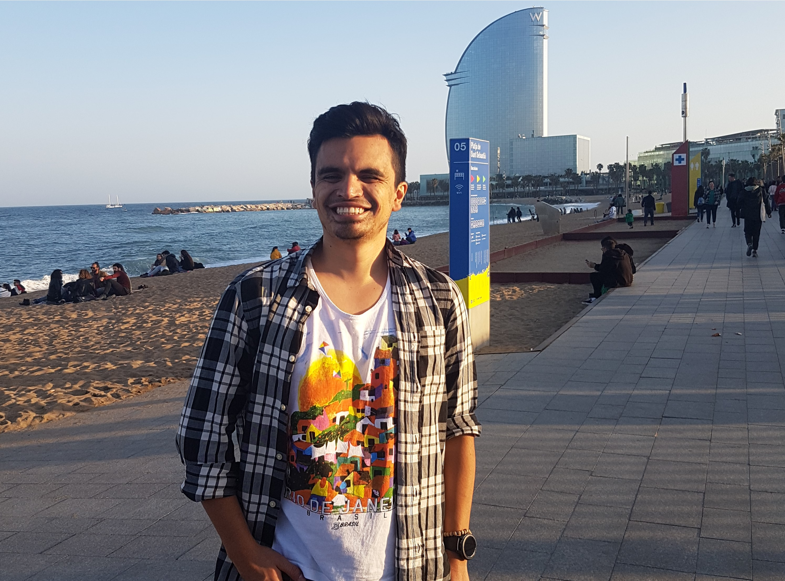

Intro

As an engineer, my passion lies in the advance of technology and finding new solutions to a better and more efficient future for everyone.
Nowadays, I reside happily in Augsburg, Germany, where I feel welcomed and have found a place as a productive member of their society, for what I am always really grateful.
By the way, check out my awesome work.
Work

Thanks to my interest on mechatronic systems, I have been able to work up close at some of the biggest companies in the industry.
For example during my Master Thesis, I was able to design an innovative movement controller for a robot manipulator, in order to achieve human-machine interaction only using the torque sensors of the robot.
Since the end of my studies, I have focused more on the development of Software, taking part in important projects for research, improvement and testing of mechatronic systems.
To know more, you can checkout my likedin profile or take a look of what I am about.
About Me

Born in Bogotá (Colombia), since very little I was curious about how things work. I remember how my aunt used to bring home development kits to teach us (me and my brothers) how to create simple but amazing circuits and structures.
After that my fascination for technology grew everyday, for what I invested most of my attention in the studies of mathematics and physics.
I did my bachelor in Mechatronics at the Universidad Nacional de Colombia, where I learned a big part of my engineering knowledge. Besides, with help of a scholarship program with the DAAD, I did an exchange year at the TUM (Munich), in which I also was able to do my final work at the facilities of Audi AG.
Not long after that, I successfully graduated from the EU4M master in Mechatronics, by studying at the Hochschule Karlsruhe and the ENSMM. During this time, I was able to experience the life in both Germany and France, which opened my vision of the world not only as an engineer but also as a person.
For any questions about me, don't hesitate to contact me.
Contact
Email: felipe.castaneda.pr@gmail.com